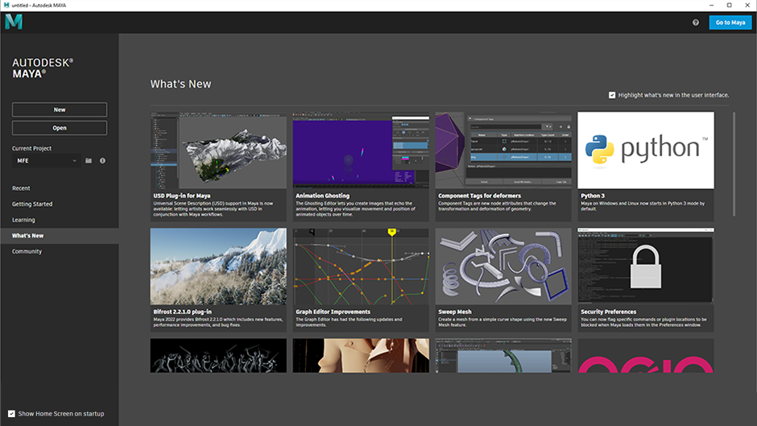

打开 Maya 时，将首先显示应用程序主页中心，它包含面向新老用户的各种有用链接。它在左侧分成多个部分：
- 最近的文件(Recent Files)：最近打开的文件列表（检测到最近打开的文件时，这是默认设置）。您可以从此处打开文件，以及显示或复制其文件位置。
- 快速入门(Getting Started)：面向新用户或初级用户的有用材料（如果选择“新用户”(New User)，则首次打开 Maya 时这是默认设置）。
- 学习(Learning)：面向所有技能级别用户的有用视频和文章。
- 新特性(What's New)：当前版本中新功能的摘要（如果选择“经验丰富”(Experienced)，则首次打开 Maya 时这是默认设置）。也可以从此处切换新特性亮显(What's New Highlighting)。
- 社区(Community)：链接到各种论坛和社交媒体社区，您可以在其中共享项目或获取帮助。

也可以从此处执行许多其他有用的功能。
在 Maya 和“应用程序主页”(Application Home)之间切换
- 通过单击左上角的 Maya 标识或按 Alt + Home，可以在这两者之间切换。
- 按 Esc 键或单击右上角的“转到 Maya”(Go to Maya)按钮以退出“应用程序主页”(Application Home)。
- 转到以打开“应用程序主页”(Application Home)。
- 您也可以使用“新建”(New)和“打开”(Open)按钮来创建新场景文件或打开现有场景文件，这将自动退出“应用程序主页”(Application Home)。
设置项目
- 单击“当前项目”(Current Project)下拉列表以从最近使用的项目列表中进行选择。
- 或者，单击它旁边的文件夹图标以在计算机上查找项目文件夹。
阻止显示“应用程序主页”(Application Home)
- 禁用左下角的“启动时显示主屏幕”(Show Home Screen on Startup)复选框。
- 或者，转到，然后在“界面”(Interface)部分中禁用“启动时显示主屏幕”(Show Home Screen on startup)。
- 或者，您可以设置环境变量(environment variable)：MAYA_NO_HOME = 1。
从 Maya 菜单栏隐藏“主视图”(Home)图标 
- 转到，然后在“主屏幕”(Home Screen)部分中，禁用“在菜单栏中显示主视图图标”(Show Home icon in Menubar)。
- 或者，设置环境变量(environment variable)：MAYA_NO_HOME_ICON = 1。